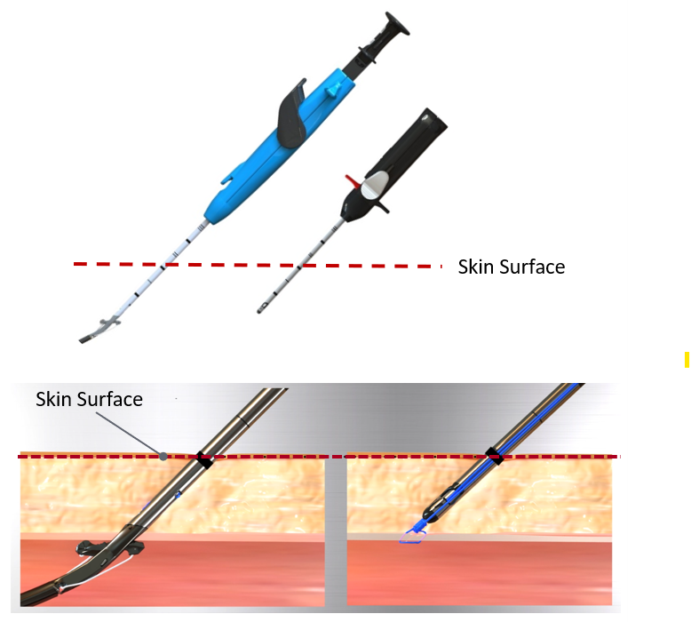
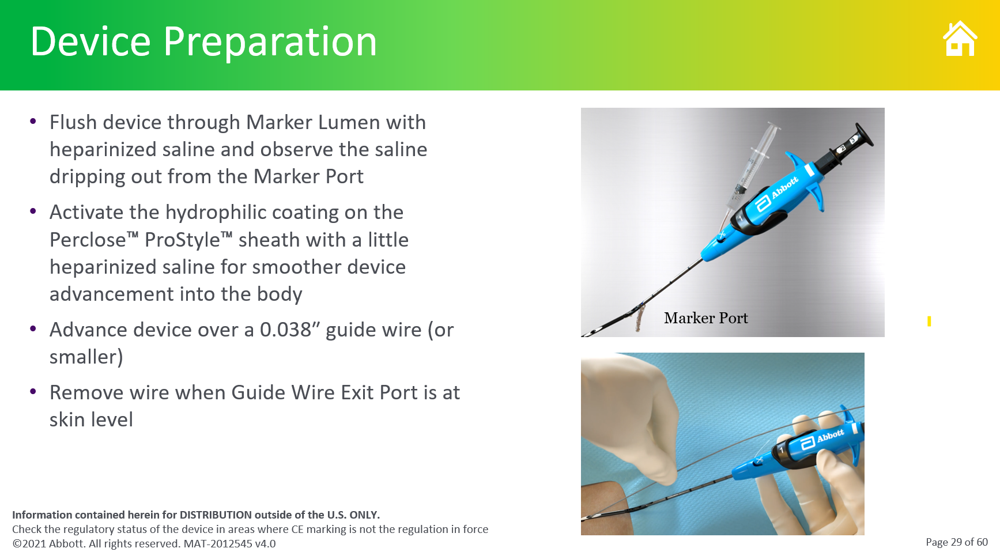
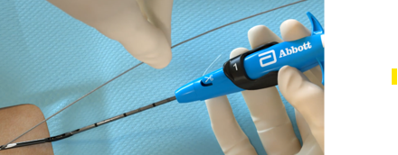
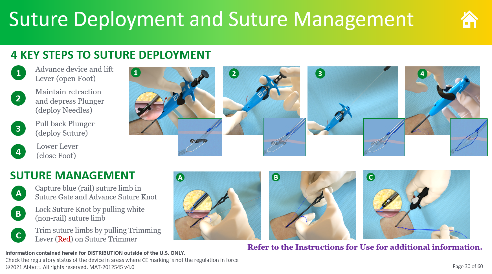
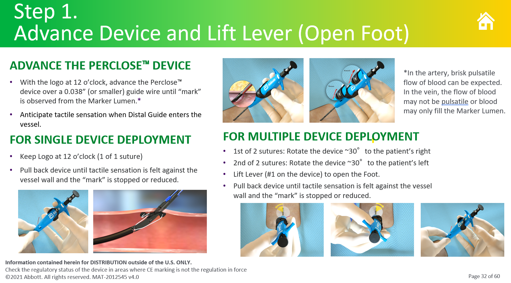
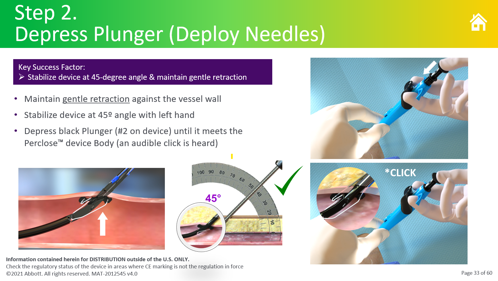
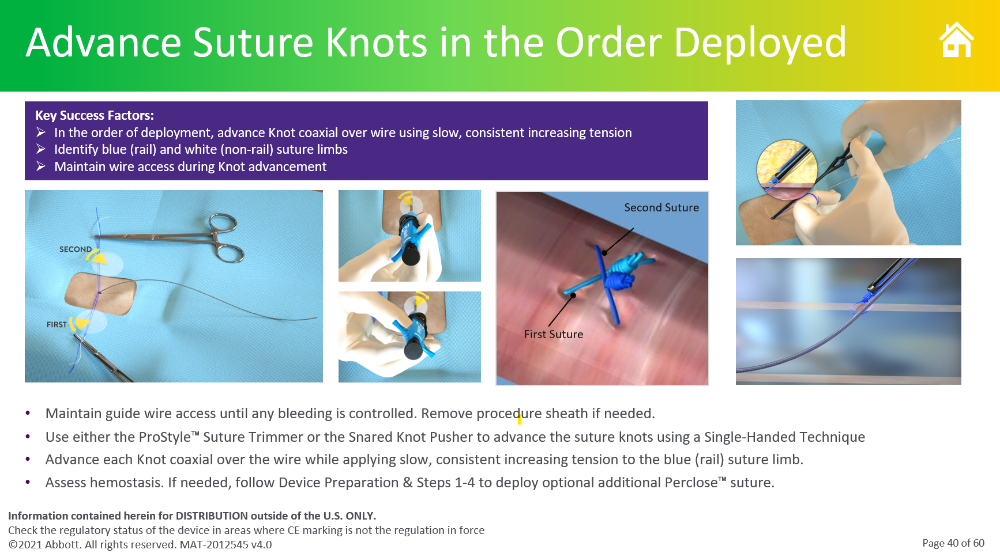
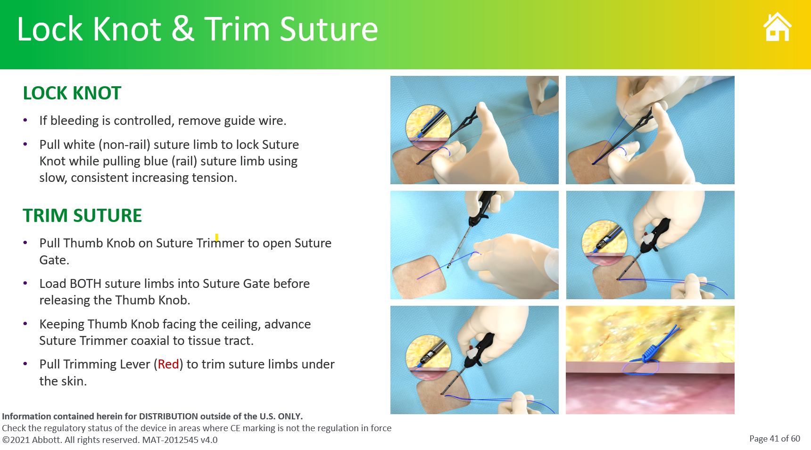

📤 分享此頁面
掃描 QR Code 開啟頁面
Abbott ProGlide Vascular Closure System
Operation Checklist for First-Time Operators
⚠
Critical Reminder
Must remove the .035" guidewire BEFORE advancing the ProGlide device into the artery.
Wire left in place will interfere with the suture mechanism and risk vessel injury.
Must remove the .035" guidewire BEFORE advancing the ProGlide device into the artery.
Wire left in place will interfere with the suture mechanism and risk vessel injury.
Phase 1 — Preparation
1
確認穿刺部位與 sheath 位置
PUNCTURE_SITE
確認 common femoral artery (CFA) 穿刺位置正確，位於 femoral head 下緣。
- 透視下確認 sheath 進入點
- 避免 SFA/profunda 分叉處或太高（above inguinal ligament）

2
置入 .035" guidewire 並確認位置
WIRE_POSITION
透過現有 sheath 置入 .035" J-tip guidewire，確認 wire 在 vessel lumen 內走行正常。

Phase 2 — Deploy ProGlide
3
⚠ 退出 .035" guidewire
WIRE_OUT
CRITICAL STEP — 必須在 ProGlide 推入前完成！
- 將 .035" wire 完全退出 ProGlide device
- 確認 wire 已完全移除後再進行下一步
- Wire 留在裡面會阻礙 foot 展開與 needle 路徑

4
推入 ProGlide device 至血管內
INSERT_DEVICE
握持 device，沿穿刺 tract 以 30-45° 角度推入，直到 marker 處看到 blood flow 從 indicator 流出。

5
確認 blood return（血液回流指示）
BLOOD_RETURN
觀察 device 上方的 blood flow indicator，確認有明顯的 pulsatile blood return，代表 device tip 在 lumen 內。

6
啟動 needle，捕捉 suture
FIRE_NEEDLE
旋轉 plunger 使 needle 穿過 vessel wall，suture 會自動被 needle 帶回。確認 suture tail 可見。

Phase 3 — Suture Management (A → B → C)
🔒
Suture Color Guide
■ Blue line = Rail suture limb (用來引導推送 knot)
■ White line = Non-rail suture limb (用來鎖緊 knot)
■ Blue line = Rail suture limb (用來引導推送 knot)
■ White line = Non-rail suture limb (用來鎖緊 knot)
7A
先拉藍線 — 推送 suture knot
KNOT_TIGHTEN
將 藍線 (blue, rail limb) 穿入 Suture Gate，利用 knot pusher 沿藍線將 pre-tied knot 推送至 arteriotomy site。
- 藍線 = rail，是 knot 滑動的軌道
- 推送時保持藍線張力穩定，持續施加向下壓力
- 直到 knot 抵達血管壁表面

7B
確認止血 → 移除 guidewire → Lock Knot
LOCK_KNOT
Knot 推送到位後，先確認 bleeding is controlled，再移除 guidewire，最後 lock knot：
- 確認穿刺處出血已受控
- 移除 guidewire
- 拉 白線 (white, non-rail) 鎖緊 knot，同時拉 藍線 (blue, rail) 以 slow, consistent increasing tension 配合收緊
- 雙線同時施力，直到感受到明確阻力代表 knot 已 lock
7C
拉 Red Lever 剪線，確認止血
CUT_CONFIRM
拉動 Suture Trimmer 上的 紅色 Trimming Lever，剪除多餘的 suture limbs。
- 剪線後觀察穿刺點 3-5 分鐘
- 確認無 oozing，hemostasis 完成
